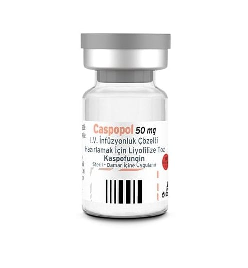

Caspopol 50 mg I.V. İnfüzyonluk Çözelti Hazırlamak İçin Liyofilize Toz, 1 Adet

Ne için kullanılır
KT · Bölüm 1CASPOPOL kaspofungin adı verilen bir ilaç içerir. Bu ilaç antifungaller olarak adlandırılan bir gruba mensuptur. CASPOPOL yetişkinlerde çocuk hastalarda (3 aylıktan büyük) aşağıd aki enfeksiyonların tedavisinde kullanılır: • Şüpheli fungal (mantar) enfeksiyonlarında; eğer bir antibiyotik ile tedaviye cevap vermeyen ateşiniz ve düşük beyaz kan hücre sayınız varsa kullanılabilir. Çok yakın zamanda bir operasyon geçirmiş veya bağışıklığı zayıflamış kişiler bir fungal enfeksiyona yakalanma riski altındadırlar. • Dokularınızda veya organlarınızda bulunan ciddi fungal enfeksiyonlar (“invazif kandidiyazis” adı verilir. Bu enfeksiyon Candida adı verilen mantar (maya) hücrelerinden kaynaklanır. Bu enfeksiyona yakalanan kişiler çok kısa zaman önce bir operasyon geçirmiş veya bağışıklığı zayıflamış kişileri içerir. Bir antibiyotiğe cevap vermeyen ateş ve üşüme bu tip enfeksiyonun en yaygın belirtileridir. • Özofagusta (ağzınızı midenize bağlayan yemek borusu) meydana gelen Candida’nın neden olduğu bir tür mantar enfeksiyonu
• Yetişkinlerde, burnunuz, nazal sinüsleriniz veya akciğerlerinizde bulunan fungal enfeksiyonlar (“invazif aspergilloz” adı verilir). Diğer antifungal tedaviler bu enfeksiyona karşı etkili olmadığında veya yan etkilere yol açtığında CASPOPOL kullanılabilir. Bu enfeksiyon Aspergillus adı verilen bir küften kaynaklanır. Bu enfeksiyona yakalanan kişiler kemoterapi almakta olan, bir nakil yapılan ve bağışıklığı zayıflamış kişileri içerir. CASPOPOL mantar hücrelerini dayanıksız hale getirir ve mantarın düzgün şekilde büyümesini durdurur. Böylelikle enfeksiyonun yayılmasını durdurur ve vücudun doğal savunma mekanizmalarına enfeksiyonu tamamen temizleme şansı verir. CASPOPOL 50 mg, 10 mL’lik Tip I cam flakon içerisinde beyaz-beyazımsı renkte liyofilize tozdur.